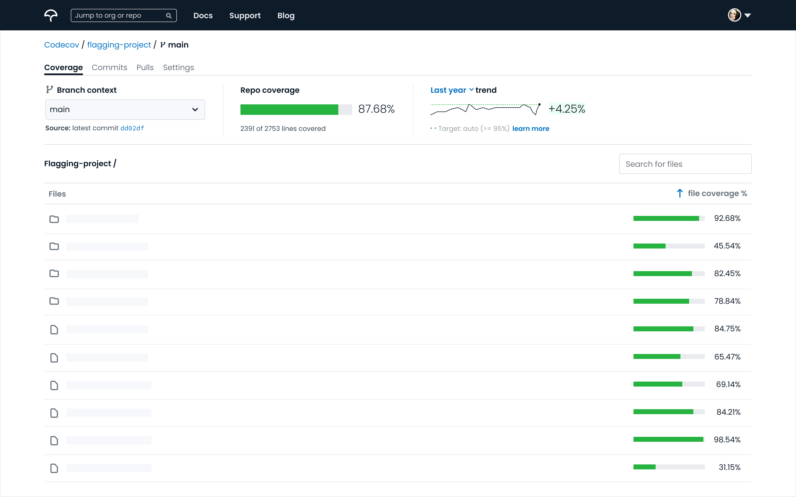
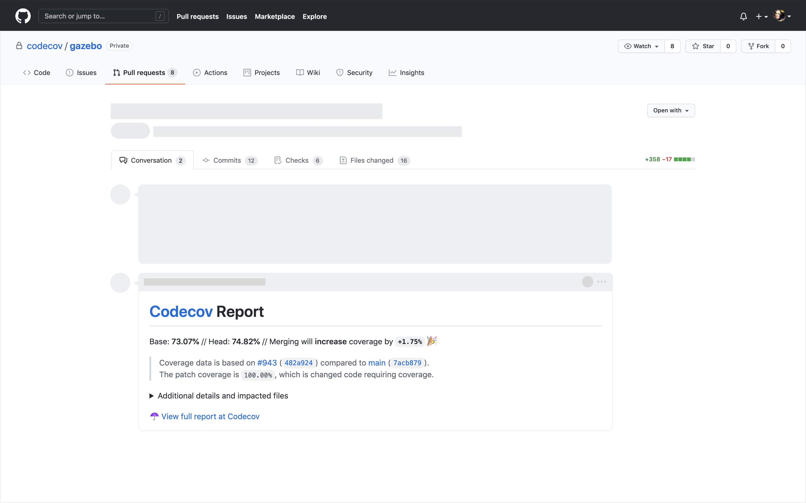

Codecov (acquired by Sentry) is a code coverage testing tool that is integrated with a repo’s continuous integration provider. Then testing and coverage reports are generated in the repo's pull requests and reporting in the Codecov app. My role serves as lead product designer and product management (for the core product).
My focus is designing an experience to help:
Build trust and confidence between a developer and their commit, a developer and maintainer’s code review, and a team’s efforts toward continual improvement in their code coverage.
Inform, educate, and facilitate decision making amongst developers and teams. This is achieved by highlighting the importance of coverage, how to improve it, and clarifying what the data (%) means.
Quality assurance is at the heart of testing and the reduction of risk. While an application might never be 100% covered at all times, we help developers better understand and eliminate associated risk.
Critical coverage surfaces and prioritizes the most important coverage so teams can move fast, but rest assured that their key executions are exceeding.
 User / org landing page
Prototype review: navigation pattern and new info architecture
Discovery: repo overview
Releasing new UI: communicating changes and soliciting feedback
Discovery: compare and commits
Mini case study: a usual week in product leadership
Here is what a recent week looked like, which outlines my collaboration approach, working style, and design leadership:
On Monday/Tuesday I identified issues to prioritize and put together a design proposal. When thinking about prioritization, there are no solutions just tradeoffs. The tradeoffs are what determine what to focus on. This is often a game of tetris between customer feedback, ongoing business goals, and team/sprint capacity.
On Tuesday, I posted the below async design review for the team. Sometimes, the async design review finalizes everything fully async. In this case, the point about the file line logic needed a bit more discussion.
async review
On Wednesday the team had a synced session (weekly design/eng meeting I lead) and focused on the items requiring back-forth-discussion (loading strategies etc) per the async feedback items. Since the team had already seen the video async, the synced meeting was able to be used as a decision making tool vs re-reviewing the designs. Outcome: 1) pagination was totally unnecessary since the API load would be unchanged, 2) decided to remove the highlighting (given the tradeoffs discussed at the sync)
Remaining week: based on the decisions made, I updated the proposal to be dev-ready, prepared the epic, and worked with engineering to scope it down to the minimal iteration in the next sprint (expand/collapse table row variant w/ code chunk shown in expansion).
Shipped!
Prototype review: file viewer and toggle
Discovery: inline, diff, and coverage
Self-hosted/enterprise user management
Improving branch context viewing
 Pull request experience (updates in-progress)
User testing: observing user experience in pull request
Iterating on feedback: problems to solve, ideation, and proposal
Thanks for visiting. Questions or thoughts? Drop me a note.